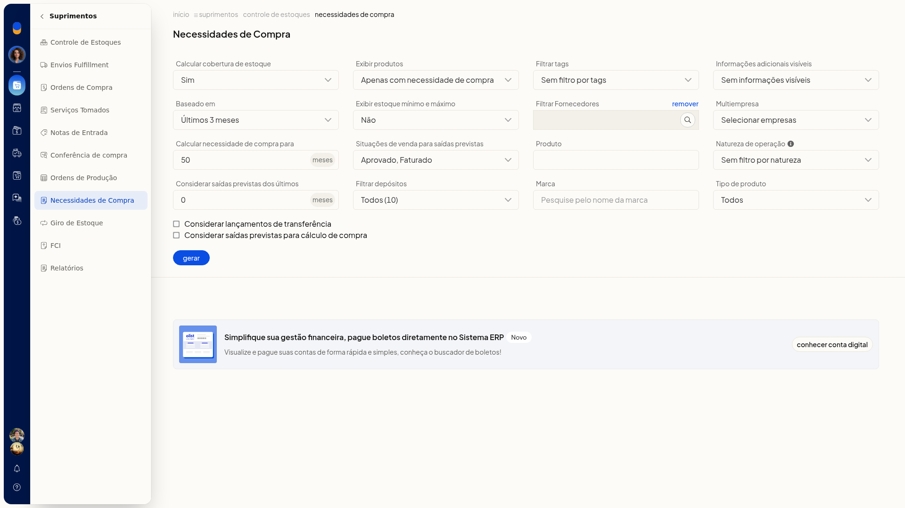
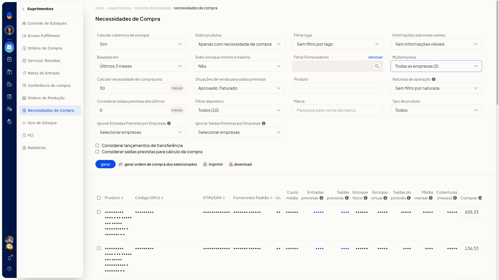
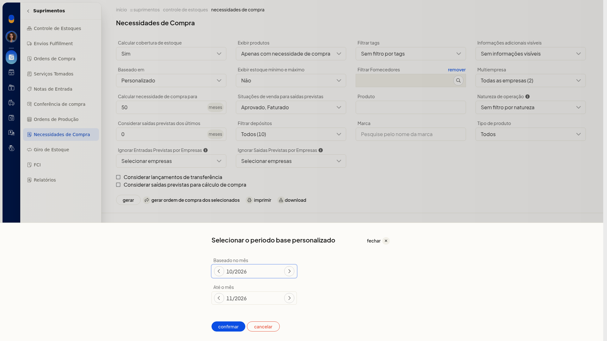
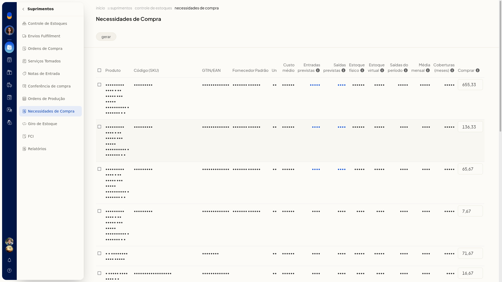
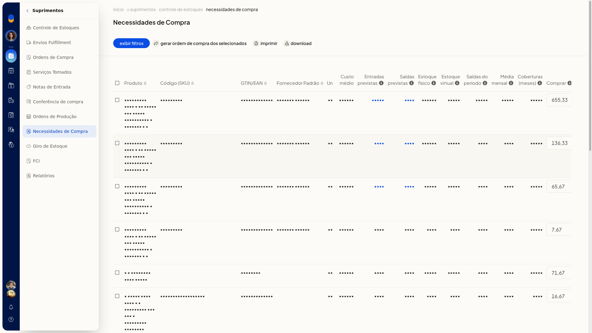
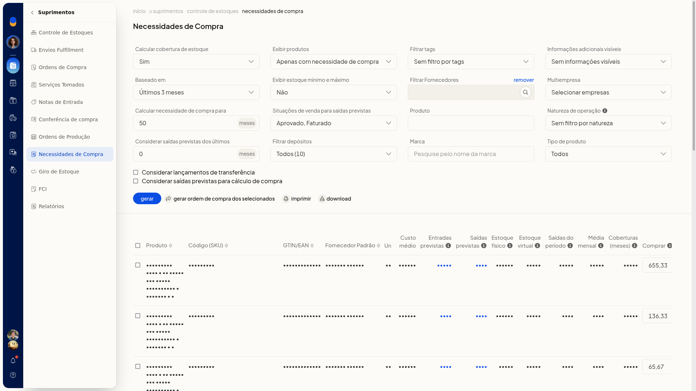

Necessidades de compra
Importante
- Alterar o estoque mínimo ou máximo neste relatório também atualiza o cadastro do produto.
- As saídas do período contabilizam todos os lançamentos de saída de estoque.
- Naturezas marcadas para não controlar estoque não entram no cálculo.
- Em Multiempresa, o nome da natureza de operação precisa ser igual em todas as empresas.
- Ignorar Entradas Previstas por Empresas e Ignorar Saidas Previstas por Empresas só aparecem depois de selecionar todas as empresas em Multiempresa.
Instruções
-
Acesse Suprimentos > Necessidades de Compra.

-
Defina Calcular cobertura de estoque como Não ou Sim.
-
Em Baseado em, escolha Último mês, Últimos 2 meses, Últimos 3 meses ou Personalizado.
-
Em Calcular necessidade de compra para, informe a quantidade de meses em número inteiro.
-
Em Exibir produtos, escolha Todos, Apenas com necessidade de compra ou Com necessidade de compra para atender o estoque mínimo.
-
Ajuste os filtros que quiser usar. Nenhum deles é obrigatório:
- Exibir estoque mínimo e máximo: Não ou Sim
- Situações de venda para saídas previstas: uma ou mais entre Em aberto, Aprovado, Preparando envio, Faturado, Pronto para envio, Enviado, Entregue, Não entregue, Dados incompletos, Em devolução e Cancelado
- Filtrar tags: tags já cadastradas, ou sem filtro
- Filtrar Fornecedores: pesquise o fornecedor; use Remover ao lado do campo para limpar
- Produto: pesquise o produto
- Informações adicionais visíveis: Código no Fornecedor Padrão ou Sem informações visíveis
- Natureza de operação: naturezas já cadastradas
- Considerar saídas previstas dos últimos: número inteiro de meses
- Filtrar depósitos: depósitos já cadastrados, ou todos
- Marca: pesquise pelo nome da marca
- Tipo de produto: Todos, Simples, Fabricado ou Matéria-prima
-
Marque, se quiser, Considerar lançamentos de transferência e Considerar saídas previstas para cálculo de compra.
-
Em Multiempresa, selecione as empresas. Ao marcar todas, o rótulo passa a indicar todas as empresas e surgem Ignorar Entradas Previstas por Empresas e Ignorar Saidas Previstas por Empresas. Use esses campos para indicar as empresas cujas entradas ou saídas previstas não devem entrar no cálculo.

-
Se escolheu Personalizado, informe Baseado no mês e Até o mês no formato mm/aaaa. Clique em confirmar para aplicar. Cancelar fecha o modal sem aplicar.

-
Clique em Gerar. Ao terminar, a tabela mostra a sugestão por produto, com seleção por linha e a coluna Comprar editável. Na barra do resultado ficam Exibir filtros, Gerar Ordem de Compra dos selecionados, Imprimir e Download.


- Para mudar os filtros com o resultado na tela, clique em Exibir filtros.

Resultado
O relatório lista, por produto, estoques, cobertura e a quantidade em Comprar. Selecione as linhas e use Gerar Ordem de Compra dos selecionados para seguir com a ordem, ou Imprimir e Download para sair com o resultado.
Informações adicionais
O que cada coluna representa
- Entradas previstas: ordens em aberto e em andamento ainda não integradas ao estoque.
- Saídas previstas: notas pendentes e autorizadas e pedidos nas situações selecionadas, ainda não integrados ao estoque.
- Estoque físico: estoque atual.
- Estoque virtual: estoque físico mais entradas previstas menos saídas previstas.
- Saídas do período: lançamentos de saída.
- Média mensal: saídas do período dividido pelo período base.
- Coberturas (meses): estoque físico dividido pela média mensal.
- Comprar: média mensal vezes a necessidade de compra, menos estoque físico, menos entradas previstas.
A tabela também mostra Produto, Código (SKU), GTIN/EAN, Fornecedor Padrão, Un e Custo médio.